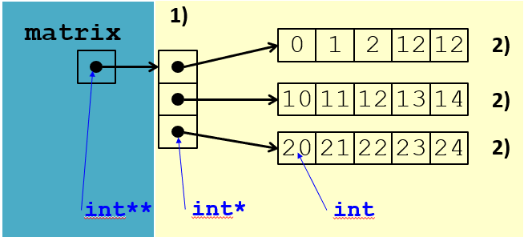

1242.1 Langage C - 2026-2027
1. Allocation statique vs dynamique
2. Allocation de variables en mémoire
3. Allocation de tableaux
4. Tableaux de pointeurs
Taille en octets ?
1) char f[][10] = {"one","two","three","four"};
2) short d[10][9];
3) float e[] = {2.1,1.1,9.22,-7.1,8.992};
4) double a, b, c;
5) double *g;
6) char *h;
7) float *i[10];
L’opérateur sizeof donne, en octets :
La taille d’une variable <var>
sizeof <var>
La taille d’une constante <const>
sizeof <const>
La taille d’un type <type>
sizeof(<type>)
⚠ Les parenthèses sont obligatoires pour un type
sizeof(int)
short tabA[10];
char tabB[5][10];
sizeof tabA; // 20 bytes
sizeof tabB; // 50 bytes
sizeof 4.25; // 8 bytes
sizeof "Hello !"; // 8 bytes
sizeof(float); // 4 bytes
sizeof(double); // 8 bytes
Si la taille des données est inconnue avant l’exécution, on peut gaspiller de la mémoire en en réservant toujours "assez"
Par exemple, mémoriser 4 phrases de longueurs inconnues
#define MAXSPACE 500
char texte[4][MAXSPACE];
Gérer la mémoire en fonction du besoin, à l'exécution, grâce à l'allocation dynamique
Nous voulons lire 4 phrases au clavier et mémoriser les phrases en utilisant un tableau de pointeurs sur char
Nous déclarons ce tableau de 4 pointeurs par
char *texte[4];
Les pointeurs occuperont 4*8 octets en mémoire
La mémoire pour stocker les phrases sera obtenue dynamiquement à l'exécution selon les besoins exacts
La fonction malloc réserve/alloue dynamiquement de la mémoire lors de l’exécution du programme
Syntaxe void* malloc(int N)
Paramètre N le nombre de bytes à réserver
Retour
l'adresse de type void* d'un bloc en mémoire de N octets
ou NULL s'il n'y a pas assez de mémoire.
Notes
L’allocation dynamique se fait sur le tas
Il faut ajouter #include <stdlib.h>
Exemple
Allocation d’un bloc en mémoire pour un texte
char *ptr = malloc(4000*sizeof(char));
char *ptr2 = malloc(4000000000);
Fournit l'adresse d'un bloc de 4000 octets libres et l'affecte à ptr
Si plus assez de mémoire, malloc retourne la valeur NULL
À éviter : transtyper / caster le retour de malloc
ptr = (char *) malloc(4000);
La fonction free libère la mémoire réservée avec malloc
Syntaxe free( <adresse> )
Libère le bloc de mémoire désigné par <adresse>
N'a pas d'effet si le pointeur a la valeur NULL
La mémoire est libérée automatiquement à la fin du programme, même si free n’a pas été utilisée
Si on perd l'adresse d'un bloc de mémoire alloué avec malloc, sans au préalable l'avoir libéré avec free →
Attention à ne pas utiliser un bloc de mémoire déjà libéré par free
Bonne pratique : affecter la valeur NULL au pointeur immédiatement après avoir libéré le bloc de mémoire concerné.
free ne doit être utilisée que pour libérer de la mémoire allouée par malloc
Schéma théorique : Dépend des OS et de la plateforme HW
int gx;
int gy=10;
➡int main(void)
{
int x=3;
int i;
int *k=malloc(8);
*(k+1)=20;
free(k);
k=NULL;
return 0;
}
int gx;
int gy=10;
int main(void)
{
➡ int x=3;
int i;
int *k=malloc(8);
*(k+1)=20;
free(k);
k=NULL;
return 0;
}
int gx;
int gy=10;
int main(void)
{
int x=3;
➡ int i;
int *k=malloc(8);
*(k+1)=20;
free(k);
k=NULL;
return 0;
}
int gx;
int gy=10;
int main(void)
{
int x=3;
int i;
➡ int *k=malloc(8);
*(k+1)=20;
free(k);
k=NULL;
return 0;
}
int gx;
int gy=10;
int main(void)
{
int x=3;
int i;
➡ int *k=malloc(8);
*(k+1)=20;
free(k);
k=NULL;
return 0;
}
int gx;
int gy=10;
int main(void)
{
int x=3;
int i;
int *k=malloc(8);
➡ *(k+1)=20;
free(k);
k=NULL;
return 0;
}
int gx;
int gy=10;
int main(void)
{
int x=3;
int i;
int *k=malloc(8);
*(k+1)=20;
➡ free(k);
k=NULL;
return 0;
}
int gx;
int gy=10;
int main(void)
{
int x=3;
int i;
int *k=malloc(8);
*(k+1)=20;
free(k);
➡ k=NULL;
return 0;
}
int gx;
int gy=10;
int main(void)
{
int x=3;
int i;
int *k=malloc(8);
*(k+1)=20;
free(k);
k=NULL;
➡ return 0;
}
Allocation dynamique d’un tableau de 3 entiers
int *ptr_ti = malloc(3*sizeof(int));
*(ptr_ti+1)= 19;
ptr_ti[2] = 18;
free(ptr_ti);
ptr_ti = NULL;
Déclaration de tableaux statiques à plusieurs dimensions
int m[3][5];
Déclaration de tableaux dynamiques à plusieurs dimensions ; on déclare des pointeurs sur des pointeurs (etc.) sur des types
E.g. tableau dynamique d'entiers à 2 dimensions
int **matrix;

int m[2][3] = {{0,1,2}, {10,11,12}};
Représentation en mémoire du tableau
↷ ↷ ↷ +4 bytes
| m[0][0] | → 0 |
| &m[0][0] | → 0xFF18 |
| m | → 0xFF18 |
| m[0] | → 0xFF18 |
| m[1] | → 0xFF24 |
int m[2][3] = {{0,1,2}, {10,11,12}};
int *ptr = (int*)m;
for (int i=0; i<2*3; i++)
{
printf("%p %d ",(ptr+i), *(ptr+i) );
}
⬅ Transtypage, car m est de type int [2][3] ou int (*)[3]
Résultat
0x23FF18 :: 0
0x23FF1C :: 1
0x23FF20 :: 2
0x23FF24 :: 10
0x23FF28 :: 11
0x23FF2C :: 12
m[1][2] + 3
(*(m + 1))[2] + 3
*(m[1] + 2) + 3
*(*(m + 1) + 2) + 3
Rappel m[i] = *(m+i)
Allocation en
1) On alloue l'espace pour le tableau de pointeurs vers les lignes d’entiers
2) On alloue pour chacun de ces pointeurs l'espace pour un tableau représentant une ligne d'entiers
Stack
Heap
#define LINES 3
#define COLUMNS 5
int main(void)
{
int **matrix = malloc(LINES*sizeof(int*));
for(int i = 0; i < LINES; i++)
{
matrix[i] = malloc(COLUMNS*sizeof(int));
}
return 0;
}
1) Allocation du tableau de pointeur
2) Allocation des tableaux correspondant aux lignes
Pour libérer l'espace alloué pour une telle structure, on procède de manière
for(i = 0; i < LINES; i++)
{
free(matrix[i]);
}
free(matrix);
matrix = NULL;
for(i = 0; i < LINES; i++)
{
matrice[i] = malloc(COLUMNS * sizeof(int));
if (matrice[i] == NULL)
{
printf("Pas assez de mémoire\n");
exit(-1);
}
}
Ensemble de pointeurs du même type, réunis dans un tableau de pointeurs
Déclaration d'un tableau de pointeurs
<Type> *<NomTableau>[<N>]
déclare un tableau <NomTableau> de <N> pointeurs sur des données du type <Type>
Exemples
double *pReels[10];
int n=10, *pEntiers[n];
Initialisation
Nous pouvons initialiser les pointeurs d'un tableau sur char par les adresses de chaînes de caractères constantes.
Exemple
char *weekDay[ ] = {"Sunday",
"Monday",
"Tuesday",
"Wednesday",
"Thursday",
"Friday",
"Saturday" };
weekDay
weekDay
On peut afficher les 7 chaînes de caractères en fournissant les adresses contenues dans le tableau weekDay à printf ou puts :
char *weekDay [] = {"Sunday","Mon...};
for (int i = 0; i < 7; i++)
printf("%s\n", weekDay[i]);
Résultat
Sunday
Monday
Tuesday
...
Comme jour[i] est un pointeur sur char, on peut afficher la première lettre des jours de la semaine en utilisant l'opérateur 'contenu de' :
char *weekDay[] = {"Sunday","Mon...};
for (i=0; i<7; i++)
printf("%c\n", *weekDay[i]);
Résultat
S
M
T
...
Premières lettres de
Sunday
Monday
Tuesday
L'expression jour[i]+j désigne la (j+1)ème lettre de la ième chaîne. On peut afficher la 2ème lettre de chaque jour de la semaine par :
char *weekDay[] = {"Sunday","Mon...};
for (i=0; i<7; i++)
printf("%c\n",*(weekDay[i]+1));
Résultat
u
o
u
...
Deuxièmes lettres de
Sunday
Monday
Tuesday
Que signifient les expressions suivantes et les écrire sous format pointeur ?
*weekDay[5]
*(weekDay[5]+2)
int *D[20]; déclare un tableau de 20 pointeurs sur des int
D[i] désigne le contenu de l'élément i de D (c'est une adresse)
*D[i] désigne le contenu de la mémoire pointée par D[i]
Si D[i] pointe dans un tableau :
D[i] désigne l'adresse de sa première composante
D[i]+j désigne l'adresse de sa j-ième composante
*(D[i]+j) désigne le contenu de sa j-ième composante